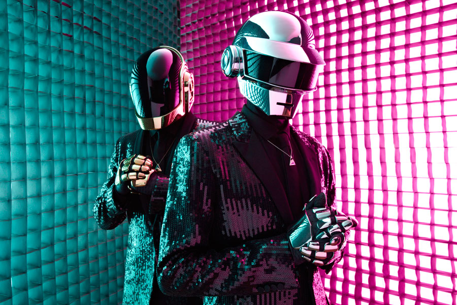

Formed in 1993 by Guy-Manuel de Homem-Christo and Thomas Bangalter. The duo achieved significant popularity in the late 1990s as part of the French house movement and had continuous success in the years following, combining elements of house music with funk, techno, disco, rock music and synthpop influences. They are also known for their visual stylization and disguises associated with their music; the duo have worn ornate helmets and gloves to assume robot personas in most of their public appearances since 2001 and rarely grant interviews or appear on television.
